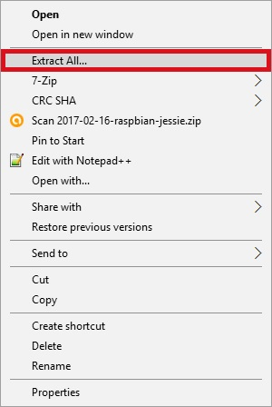

Lab 1:
Install Rasbian on a Raspberry PI
Information
The Raspberry Pi is a single board computer that is about the size of a credit card. The Raspberry Pi 2 B+ (the model these labs are written for) has a 900MHz quad-core ARM CPU with 1GB of RAM. Those specs don't sound very impressive when compared to most other computers, but the Pi 2 costs $35 (at release) and has General Purpose Input/Output headers available to the user. One of the most popular operating system for the Pi is Rasbian, a distro based on Debian, and is the Raspberry Pi Foundation's offically supported OS. There are other OSs available, such as Ubuntu Mate, Windows 10 IOT, and many others. You will be using Raspbian for these labs. These labs (and the HAT they use) were written for a Raspberry Pi 2 B+, but should work on newer models of the Pi (such as the Pi 3) that support the HAT (Hardware Attached on Top) standard.Instructions
- Make sure you have these instructions open on your Windows desktop
- Download the files from the Resources section below to your Windows computer
- Unzip the Rasbian image
- Right click the file -> Extract All 
- Select a file path that you can find
- Click Extract
- Check if Win32 Disk Imager is installed
- If not, run the Win32DiskImager Installer from the Resources section and follow its instructions
- Prepare your SD card
- Insert your MicroSD card into your reader or adapter.
- Plug your adapter into your Windows Machine
- Image the SD card
- Run Win32 Disk Imager with Admin rights
- Enter the file path to the Rasbian image file.
- Select the drive letter of your SD card.
- Double check your information and click Write
- Win32 Disk Imager should now write the image to the SD card. It will take some time; be patient. Continue onto the physical setup of the PI while the write is executed.
- Physical setup
- You should have been supplied with the following for this lab:
- A Raspberry Pi 2
- A USB AC power adapter
- An HDMI cable (or an HDMI -> DVI cable)
- USB Mouse
- USB Keyboard
- Ethernet cable
- Plug your mouse and keyboard into your Pi
- Plug your power adapter into the wall outlet or power strip at your workstation, but do not plug it into the Pi yet.
- Plug your HDMI cable into your monitor and your Pi
- Plug your ethernet cable into your Pi and the outlet at your station
- When the write to the SD card finishes, eject the card and carefully install it in the Pi
- You're ready to boot your Pi!
- Boot!
- Plug your AC adapter's micro USB into your Pi and watch as your Pi (hopefully) boots up to the Pixel Desktop.

Warning!
Be careful when trying to insert a MicroSD card into a reader or adapter, they can be fragile!


Warning!
Be absolutely certain you know which drive you select. This process will destroy all existing data!


Hint
If you only have one monitor, wait until your SD card is ready and you've read the rest of these directions.
Hint
If your only ethernet outlet is the one your Windows computer is using (assuming that is what you're reading these instructions from), make sure you have this instruction page fully loaded and finish all network access activies before removing the connection.

Hint
The Raspberry Pi 2's SD card slot is on the bottom of the board. The contacts of the SD card will face the board itself. The card should click in gently. Ask for help if you need it.

Success!
If you've made it to the desktop, use the web browser to open lab 2. You no longer need your Windows computer.
Failure!
If something went wrong during the boot process, ask your instructor or lab assistant for assistance.
If you accidently removed your SD card while the Pi was on (like I did while writing this lab), you'll probably need to reflash the card.
Resources
Download these files to your Windows Computer:- Rasbian Image
- Win32DiskImager Installer
Site configuration is not complete!
Instructor: The current Rasbian Image link goes to the Raspberry PI Foundation's server. It is recommended that the image is downloaded and hosted locally with the rest of these labs to increase download speed. Change the i.html file where this page is hosted to remove this box and to change the link to the new location.